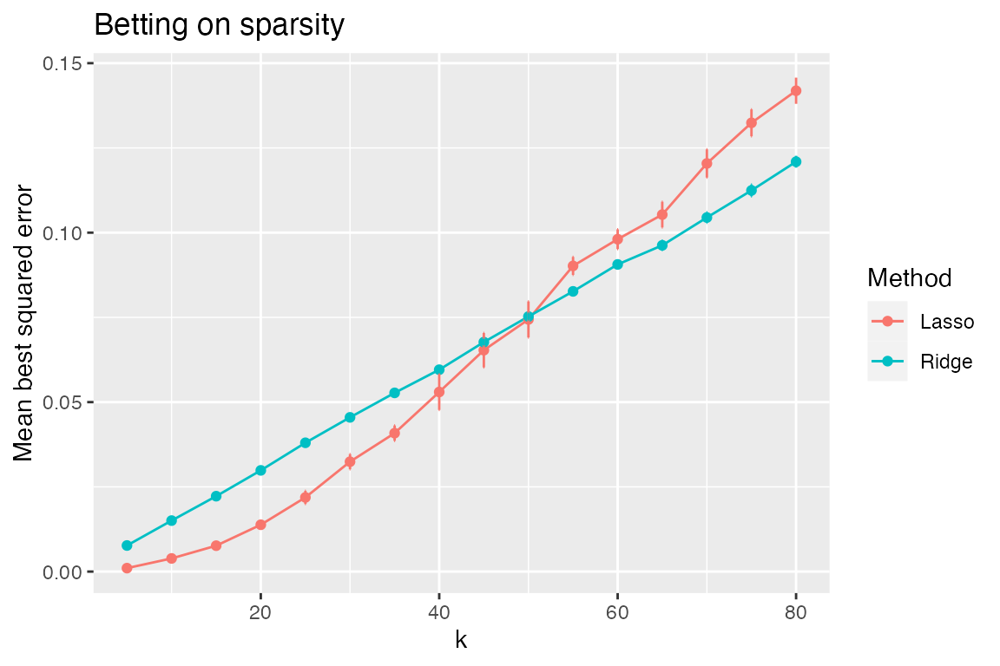
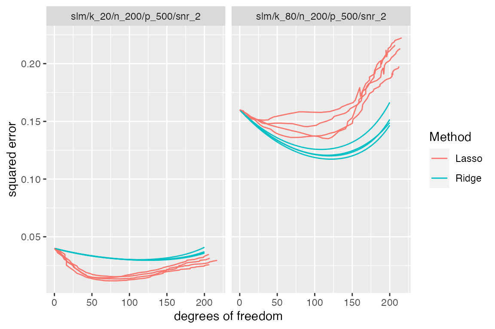
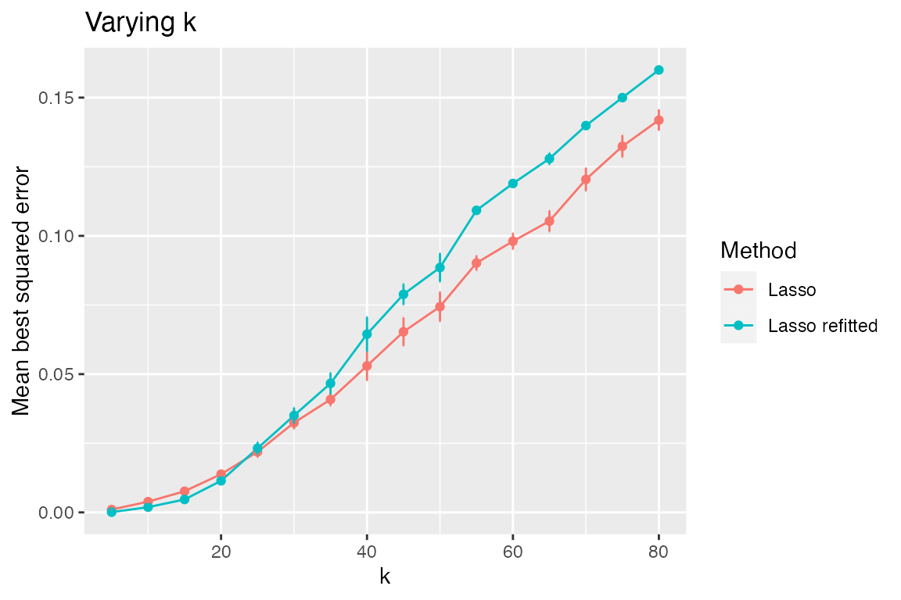
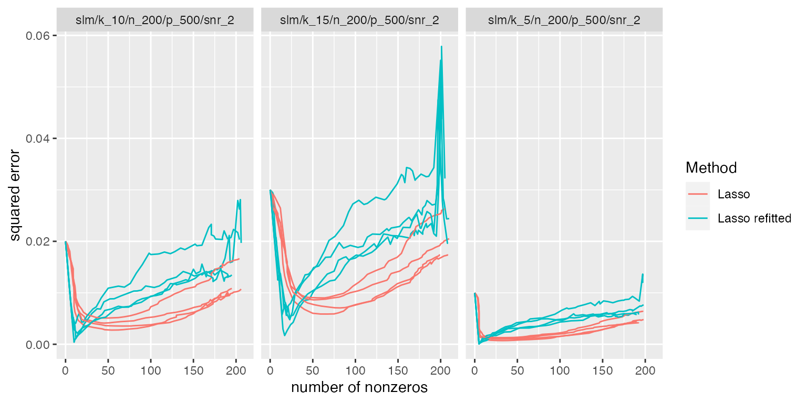
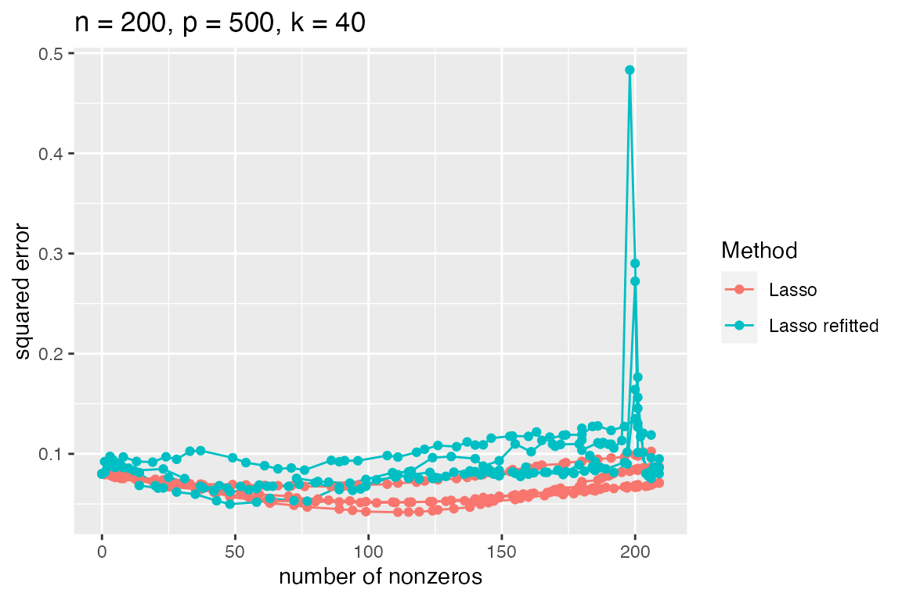
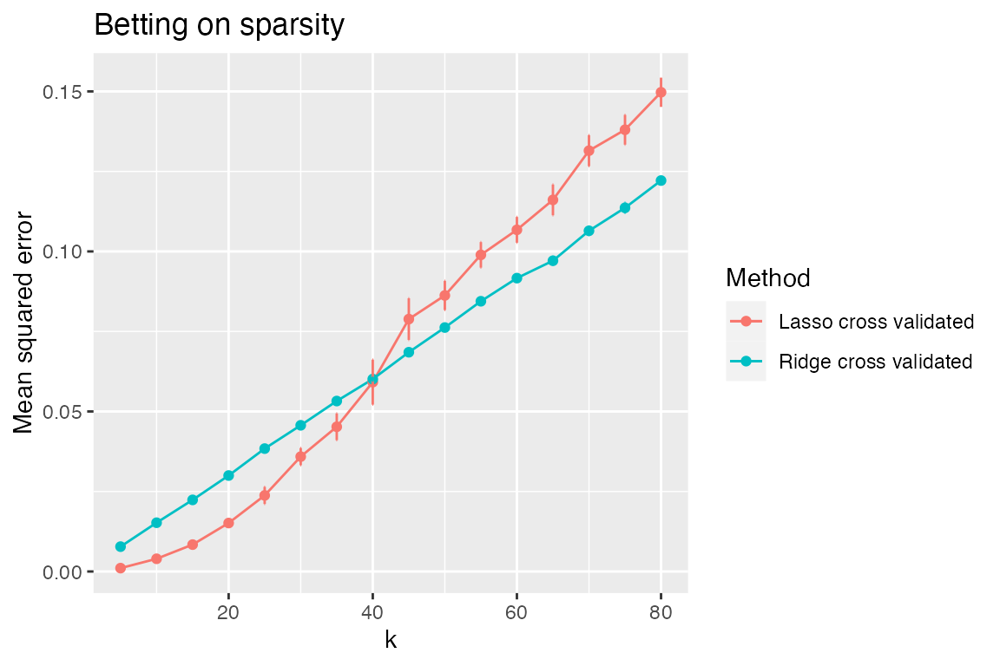

Overview
In this vignette, we show how the simulator can be used to perform simulations related to the lasso.
Betting on Sparsity
In The Elements of Statistical Learning, the authors describe a “bet on sparsity” principle that suggests that one should,
“Use a procedure that does well in sparse problems, since no procedure does well in dense problems.”
In support of this idea, they compare the performance of lasso and
ridge estimators in sparse and dense situations. We demonstrate how the
simulator can be used to perform such a simulation
study.
sim <- new_simulation("bet-on-sparsity", "Bet on sparsity") %>%
generate_model(make_sparse_linear_model, n = 200, p = 500, snr = 2,
k = as.list(seq(5, 80, by = 5)),
vary_along = "k") %>%
simulate_from_model(nsim = 2, index = 1:2) %>%
run_method(list(lasso, ridge),
parallel = list(socket_names = 2, libraries = "glmnet")) %>%
evaluate(list(sqrerr, nnz, df, best_sqrerr))Observe that the entire simulation is coded in less than 10 lines of code.
In the first line, we name the simulation (both in a computer-friendly and human-readable way);
this newly created simulation is then piped1 to
generate_model, which creates a sequence of sparse linear model objects where the sparsity level is varied from 5 to 80. These model objects contain \(X\) and \(\beta\), and a function describing how to generate \(y\);this is then piped to
simulate_from_model, which creates 4 draws (that is, \(y\) vectors) from each model (these are created in 2 chunks of size 2, each getting its own random number generator stream so that we will get the same results regardless of whether they are performed in parallel or in sequence); 2the simulation object is then piped to
run_method, where both the lasso and ridge are performed (in parallel, across 2 cpus) on all 64 instances (64=16*4; 16 models with 4 draws per model);finally, 4 metrics are computed on each method’s output across all instances.
All intermediate results are automatically saved to file, and the
simulation object sim contains references to all of these
saved results. The functions model, draws,
output, and evals can be applied to
sim to return various results created above. For now, we
are interested in looking at the final results of the simulation, which
are contained in evals(sim).
The function plot_eval_by is designed for situations in
which we wish to see how a metric of interest varies with some model
parameter. In the “bet on sparsity” simulation, we might be curious to
see how varying the sparsity level of the model affects the
best-achievable mean squared error \(\min_\lambda\frac1{p}\|\hat\beta_\lambda-\beta\|^2\)
of each method.
plot_eval_by(sim, "best_sqrerr", varying = "k", main = "Betting on sparsity")
The rationale for the “bet on sparsity” principle is apparent from this plot. When \(k\) is low, we see large gains in performance using the lasso compared to the ridge; when \(k\) is large, ridge does better—however, in this regime, neither method is doing particularly well (and in a relative sense, ridge’s advantage is only slight).
Rather than looking at just the best MSE of each method, we can also examine how the MSE varies with degrees of freedom (which, unlike \(\lambda\), has the same meaning across different methods). Let’s look in particular at two models with very different sparsity levels \(k\).
subset_simulation(sim, k %in% c(20, 80)) %>% plot_evals("df", "sqrerr")
The relaxed lasso
Suppose we wish to add the relaxed lasso to this comparison. The relaxed lasso involves fitting a lasso to determine the set of nonzeros and then performing least squares on this selected subset of variables.
sim2 <- sim %>%
subset_simulation(methods = "lasso") %>%
rename("relaxing-the-lasso") %>%
relabel("Effect of relaxing lasso") %>%
run_method(methods = lasso + refit) %>%
evaluate(list(sqrerr, nnz, df, best_sqrerr))We will describe in a later section of this vignette how the
simulator interprets lasso + refit as an
extension of the lasso method and therefore does not
require re-running the lasso but instead takes the already saved output
from the lasso method and performs refitting on this output.
Let’s check if this is an improvement over the lasso.
plot_eval_by(sim2, "best_sqrerr", varying = "k")
It looks like the relaxed lasso does better only for small values of \(k\). We can see this better by looking at a table of the first several models with low true sparsity level \(k\).
sim2 %>%
subset_simulation(methods = c("lasso", "lasso_refit"), subset = 1:3) %>%
tabulate_eval(metric_name = "best_sqrerr",
format_args = list(nsmall = 3, digits = 1),
output_type = "markdown")| Lasso | Lasso refitted | |
|---|---|---|
| n = 200, p = 500, k = 5 | 1e-03 (1e-04) | 9e-05 (2e-05) |
| n = 200, p = 500, k = 10 | 4e-03 (5e-04) | 2e-03 (8e-04) |
| n = 200, p = 500, k = 15 | 8e-03 (7e-04) | 5e-03 (1e-03) |
As the true sparsity level increases, it makes sense that the performance of the relaxed lasso degrades since the lasso can accommodate a larger number of features whereas the relaxed lasso cannot (since least squares suffers greatly when the number of features nears the sample size \(n\)). This explanation is confirmed by plotting the MSE versus the number of nonzeros in the fitted model:
subset_simulation(sim2, methods = c("lasso", "lasso_refit"), subset = 1:3) %>%
plot_evals("nnz", "sqrerr")
However, when the true sparsity level is larger, we see that the relaxation can backfire.
subset_simulation(sim2, methods = c("lasso", "lasso_refit"), k == 40) %>%
plot_evals("nnz", "sqrerr")
Since it looks like the relaxed lasso is not particularly beneficial in this situation, let’s return to our comparison of the lasso and ridge.
Betting on sparsity (with cross-validation)
The simulation above side-stepped the issue of tuning parameter selection by either looking at curves parameterized by \(\lambda\) or by looking at the “best MSE”, that is \(\min_\lambda MSE(\lambda)\). In practice, it is common to use cross-validation to select the tuning parameter, so it might be more practically relevant to compare the performance of lasso and ridge when cross-validation is used to select their tuning parameters.
Let’s create a new simulation object with the same model and simulated data as before, but with two new methods:
sim3 <- sim %>% subset_simulation(methods = "") %>%
rename("bet-on-sparsity-cv") %>%
relabel("Bet on sparsity (with cross validation)") %>%
run_method(list(lasso + cv, ridge + cv)) %>%
evaluate(list(sqrerr, nnz))
plot_eval_by(sim3, "sqrerr", varying = "k", main = "Betting on sparsity")
A look at the components of the simulations above
The idea of the simulator is that one should only have
to write problem-specific code when performing simulations. Everything
else—bookkeeping, saving/loading results, parallelization, handling of
random number generator streams, plotting, making tables—is taken care
of by the simulator. We look now at the problem-specific
components that were “plugged in” to the simulator to perform the
simulations above. The components of the simulator are
organized into models, methods, and metrics, as demonstrated below.
Although not required, to stay organized we recommend having each of
these components defined in separate files, named
model_functions.R, method_functions.R, and
eval_functions.R.
The model
We simulate from a linear model \[
Y=X\beta + \epsilon
\] where \(Y\in\mathbb R^n\),
\(\beta\in\mathbb R^p\), and \(\epsilon\sim N(0,\sigma^2I_n)\). We have
taken \(X\) to have iid \(N(0,1)\) entries and treat it as fixed in
this simulation. We define a Model object, which specifies
the parameters and, most importantly, describes how to simulate
data.
make_sparse_linear_model <- function(n, p, k, snr) {
x <- matrix(rnorm(n * p), n, p)
beta <- rep(c(1, 0), c(k, p - k))
mu <- as.numeric(x %*% beta)
sigma <- sqrt(sum(mu^2) / (n * snr)) # taking snr = ||mu||^2 / (n * sigma^2)
new_model(name = "slm", label = sprintf("n = %s, p = %s, k = %s", n, p, k),
params = list(x = x, beta = beta, mu = mu, sigma = sigma, n = n,
p = p, k = k),
simulate = function(mu, sigma, nsim) {
return(lapply(1:nsim, function(i) mu + sigma * rnorm(n)))
})
}We will typically put the code above in a file named
model_functions.R.
The methods
We compare the lasso and ridge. Both of these methods depend on tuning parameters, so we compute a sequence of solutions.
library(glmnet)
lasso <- new_method("lasso", "Lasso",
method = function(model, draw, lambda = NULL) {
if (is.null(lambda))
fit <- glmnet(x = model$x, y = draw, nlambda = 50,
intercept = FALSE)
else {
fit <- glmnet(x = model$x, y = draw, lambda = lambda,
intercept = FALSE)
}
list(beta = fit$beta, yhat = model$x %*% fit$beta,
lambda = fit$lambda, df = fit$df)
})
ridge <- new_method("ridge", "Ridge",
method = function(model, draw, lambda = NULL) {
sv <- svd(model$x)
df_fun <- function(lam) {
# degrees of freedom when tuning param is lam
sum(sv$d^2 / (sv$d^2 + lam))
}
if (is.null(lambda)) {
nlambda <- 50
get_lam <- function(target_df) {
f <- function(lam) df_fun(lam) - target_df
uniroot(f, c(0, 100 * max(sv$d^2)))$root
}
lambda <- sapply(seq(1, nrow(model$x),
length = nlambda), get_lam)
}
df <- sapply(lambda, df_fun)
beta <- sapply(lambda, function(r) {
d <- sv$d / (sv$d^2 + r)
return(sv$v %*% (d * crossprod(sv$u, draw)))
})
list(beta = beta, yhat = model$x %*% beta,
lambda = lambda, df = df)
})Methods can return different items. However, aspects of the method
that will be used downstream in the simulation and compared across
methods should be in a common format. Thus beta,
yhat, and df in each case are in the same
format. These will be the items used when evaluating the methods’
performances.
We will typically put the code above in a file named
method_functions.R.
The metrics
When we compare methods in plots and tables, there are usually a
number of “metrics” we use. An object of class Metric
specifies how to go from a model’s parameters and the output of a method
and return some quantity of interest.
sqrerr <- new_metric("sqrerr", "squared error",
metric = function(model, out) {
colMeans(as.matrix(out$beta - model$beta)^2)
})
best_sqrerr <- new_metric("best_sqrerr", "best squared error",
metric = function(model, out) {
min(colMeans(as.matrix(out$beta - model$beta)^2))
})
nnz <- new_metric("nnz", "number of nonzeros",
metric = function(model, out) {
colSums(as.matrix(out$beta) != 0)
})
df <- new_metric("df", "degrees of freedom",
metric = function(model, out) out$df)Observe that out refers to the list returned by our
methods and model refers to the Model object
that is generated by make_sparse_linear_model. The
$ operator can be used to get parameters that are stored in
the Model object.
We will typically put the code above in a file named
eval_functions.R.
Extensions of the methods
In the simulations above, we saw two examples in which we studied
methods that were extended versions of other methods. While the relaxed
lasso could have been treated as a completely separate method from the
lasso, this would have been wasteful in a comparison to the lasso since
it would have required us to fit the lasso twice (once when calling the
lasso and once within the relaxed lasso). Instead, we created what is
called an ExtendedMethod object, which behaves like a
Method object, except it allows one to use the output of
another method.
If we only care about relaxing the lasso, we might directly create an
ExtendedMethod. However, in some situations, we may wish to
extend multiple methods in the same fashion. For example, perhaps we may
later wish to “relax” both the lasso and another variable selection
procedure, such as SCAD or MCP. In the spirit of code reusability, we
therefore created a MethodExtension object called
refit. A MethodExtension object when added to
a Method object generates an ExtendedMethod.
In our example of the relaxed lasso, we created a
MethodExtension called refit that takes any
method’s output and performs least squares on the nonzeros.
refit <- new_method_extension(name = "refit", label = "refitted",
method_extension = function(model, draw, out,
base_method) {
beta <- apply(out$beta, 2, function(b) {
ii <- b != 0
if (sum(ii) == 0)
return(b)
xtx <- crossprod(model$x[, ii])
# add small ridge in case solution has more
# than n nonzeros:
diag(xtx) <- diag(xtx) + 1e-4
bb <- solve(xtx,
crossprod(model$x[, ii], draw))
b[ii] <- bb
return(b)
})
return(list(beta = beta,
yhat = model$x %*% beta,
lambda = out$lambda,
df = rep(NA, ncol(beta))))
})Having created the MethodExtension, we can get the
relaxed lasso ExtendedMethod through the simple addition of
objects:
lasso + refit## ExtendedMethod Component
## name: lasso_refit
## label: Lasso refittedIf we had defined a different variable selection procedure, say
mcp, we could just as easily generated its relaxed version,
writing no new code:
relaxed_mcp <- mcp + refitThe other example of a method extension in the simulations above was cross-validation. We wrote this method extension so that it could be used to create extended versions of multiple methods.
#' Make folds for cross validation
#'
#' Divides the indices \code{1:n} into \code{nfolds} random folds of about the same size.
#'
#' @param n sample size
#' @param nfolds number of folds
make_folds <- function(n, nfolds) {
nn <- round(n / nfolds)
sizes <- rep(nn, nfolds)
sizes[nfolds] <- sizes[nfolds] + n - nn * nfolds
b <- c(0, cumsum(sizes))
ii <- sample(n)
folds <- list()
for (i in seq(nfolds))
folds[[i]] <- ii[seq(b[i] + 1, b[i + 1])]
folds
}
cv <- new_method_extension("cv", "cross validated",
method_extension = function(model, draw, out,
base_method) {
nfolds <- 5
err <- matrix(NA, ncol(out$beta), nfolds)
ii <- make_folds(model$n, nfolds)
for (i in seq_along(ii)) {
train <- model
train@params$x <- model@params$x[-ii[[i]], ]
train@params$n <- nrow(train@params$x)
train_draw <- draw[-ii[[i]]]
test <- model
test@params$x <- model@params$x[ii[[i]], ]
test@params$n <- nrow(test@params$x)
test_draw <- draw[ii[[i]]]
fit <- base_method@method(model = train,
draw = train_draw,
lambda = out$lambda)
yhat <- test$x %*% fit$beta
ll <- seq(ncol(yhat))
err[ll, i] <- colMeans((yhat - test_draw)^2)
}
m <- rowMeans(err)
se <- apply(err, 1, sd) / sqrt(nfolds)
imin <- which.min(m)
ioneserule <- max(which(m <= m[imin] + se[imin]))
list(err = err, m = m, se = se, imin = imin,
ioneserule = ioneserule,
beta = out$beta[, imin],
yhat = model$x %*% out$beta[, imin])
})We will typically put the code above in the file named
method_functions.R, though if that file is large, we may
prefer to have a separate file named, perhaps,
method_extensions_functions.R.
Conclusion
This vignette demonstrated some features of the
simulator such as parallel computing, writing extensions to
methods, and making basic plots and tables. In other vignettes,
additional features are demonstrated. For example, the vignette on the
elastic net demonstrates how one can work with a sequence of methods
that are identical except for a particular setting (such as \(\alpha\) for the elastic net).